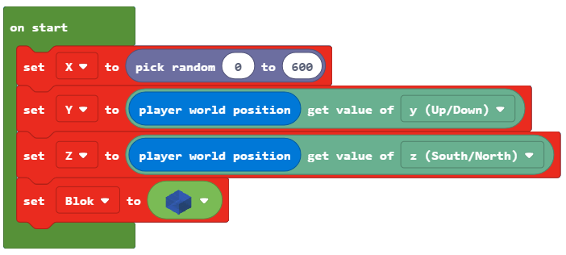

Project Task - Hot and Cold¶
Same as you, the programs in MakeCode can make decisions. Until now, all the programs we have created were linear programs, or more specifically, programs where commands are executed consecutively, one after the other until the end of the program. Unlike these programs, where every step, i.e. every command, is executed once, in decision-making algorithms, or more precisely, conditional (branch) algorithms some of the commands will be executed, and some won’t, which will depend on whether the condition has been fulfilled or not.
We will demonstrate this concept by programming the Hot and Cold game. Based on the position of the character (player), a message is displayed how far it is from an object placed somewhere in the world. If the character is close the word Hot will be said, and if the character is far away from the object the word Cold will be said. If the character (player) is very close to the object the program will say Scorching, and if it is very far away, the program will say Freezing.
Stage 1.
Thinking about the task: To determine the distance of an object to the character (player) we need to measure the distance between them, and based on those values we will get the desired message.
Stage 2
Open Code Builder (by pressing the key C); an editor window will appear where you can stack blocks.
At the very beginning we need to define the object and place it in the world, which we will do in the on start block. We will define the position in such a way that the coordinate X has a random value from the interval 0 to 600, and the remaining two coordinates have the value Y and Z of the player.
To achieve this we need to create the variables X, Y, Z (they store the coordinates of the object’s position) and Block (stores the object). We also need to set initial values for the variables we created.
In the block  we will define the position and the type of the object by dragging the blocks in the following manner:
we will define the position and the type of the object by dragging the blocks in the following manner:
we define the coordinate x with the variable
X, which will have the random value from the interval 0 to 600, this is achieved with the block from the category .
from the category .we define the coordinate y with the variable
Y, which will have the value of the y coordinate of the player’s position in the world. This is achieved with the block from the category
from the category  , where we will put the variable
, where we will put the variable Yinstead of the variable position, and the block from the category
from the category  .
.we define the coordinate z with the variable
Z, which will have the value of the z coordinate of the player’s position in the world. This is achieved with the block from the category , where we will put the variable
from the category , where we will put the variable Zinstead of the variable position, and the block from the category .we define the object to be placed somewhere in the world. This is achieved by using the block
 from the category
from the category  .
.
{kind=link}
The look of the code after defining the variables:
Once the variables and the object have been defined, we need to drag the block, which will physically place that object somewhere in the world.
For this we will use the block  from the category . This block has two argument blocks, in the first argument block we will drag the variable
from the category . This block has two argument blocks, in the first argument block we will drag the variable  , and in the second we will put the coordinates
, and in the second we will put the coordinates  , and
, and  for defining the position of the object by using the block
for defining the position of the object by using the block  from the category .
from the category .
The look of the modified code:

This way, we completed the positioning of the object in the Minecraft world. If we want to see its coordinates we can use the block  . For displaying this information we can use the block
. For displaying this information we can use the block  from the subcategory
from the subcategory  of the category .
of the category .
{kind=link}
The look of the program after the addition of this block:

Our next step would be to drag the blocks, which we will use to determine the distance between the object placed in the world and the character (player), into the block  . We will do this by defining variables which will store the position of the character (player), i.e. they store the x, y and z coordinates of the character. The individual coordinates are obtained using the block and block
. We will do this by defining variables which will store the position of the character (player), i.e. they store the x, y and z coordinates of the character. The individual coordinates are obtained using the block and block  .
.
We create the variables X1, Y1 and Z1 and we give them the values of the character’s position coordinates:

To calculate the distance between the character and the object, we need to apply the formula also used in mathematics for determining the distance in 3D between two points A (x1, y1, z1) and B(x2, y2, z2):

We create the variable distance, and we give the value which is obtained by using the formula for calculating the distance between two points.
In MakeCode, mathematical operations are located in the category . We will construct the formula mentioned above by simply adding appropriate blocks (+, -, and square **, as well as square root):

The look of the upgraded code:

Now that we have the value of the variable distance, we can complete our game Hot and Cold.
Based on how far the character (player) is from the object, Minecraft informs the character (player) about the location of the object with short messages such as Hot, if the object is close, and Cold, if the object is far away. If the character (player) is very close to the object, the program will say Scorching, and if it is very far away, the program will say Freezing.
Based on the setup of the task:
If the distance between the character (player) and the object is more than 100 blocks, the program should say Freezing.
If the distance between the character (player) and the object is more than 50 blocks, the program should say Cold.
If the distance between the character (player) and the object is more than 25 blocks, the program should say Hot.
If the distance between the character (player) and the object is more than 12 blocks, the program should say Scorching.
If the object is located next to the player (the distance is 0), the program should say Found.
For this, we will use the block  and the comparison operators (> and =) from the category
and the comparison operators (> and =) from the category  . We add the branches by clicking the sign +.
The look of the code after adding these blocks:
. We add the branches by clicking the sign +.
The look of the code after adding these blocks:

The look of the final program for the Hot and Cold game:

Stage 3
Testing the program.
Click on the button  .
.
We start the chat by pressing the key T on the keyboard, and we enter the word where in the chat, which will be the “trigger” for starting the game.